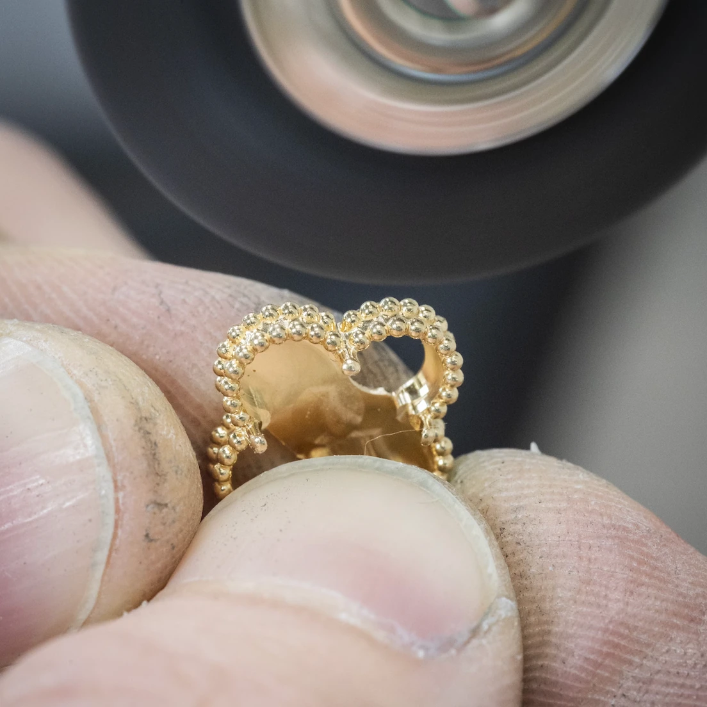
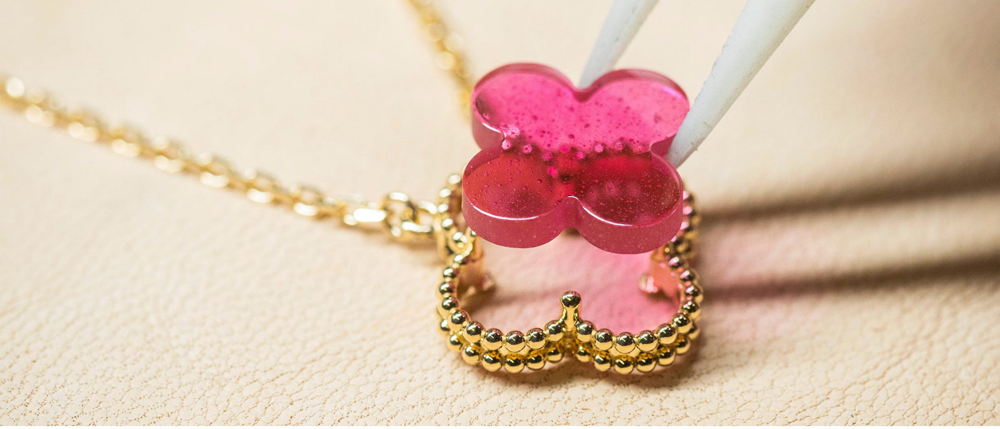
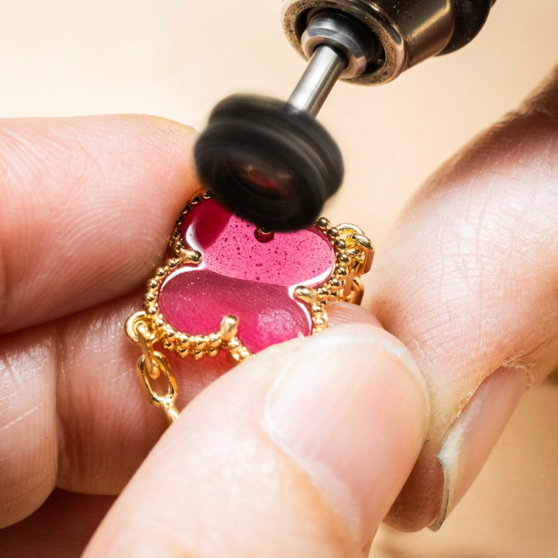
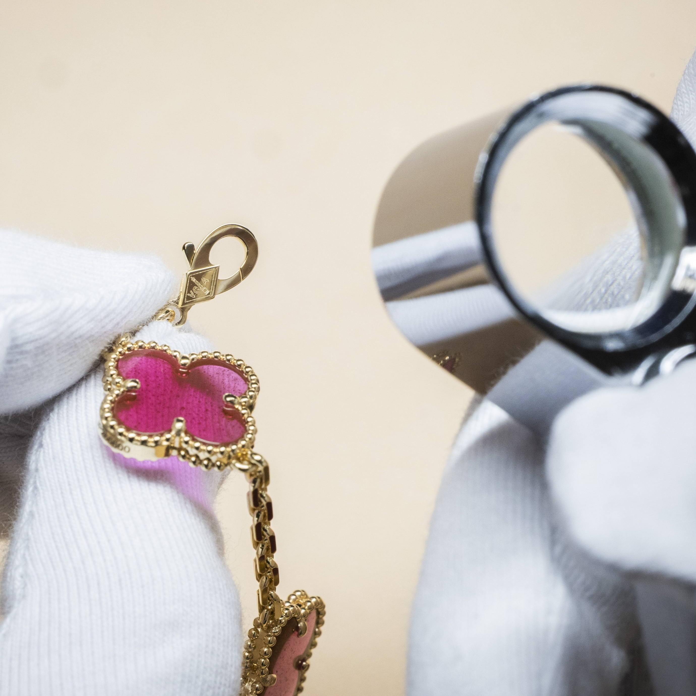
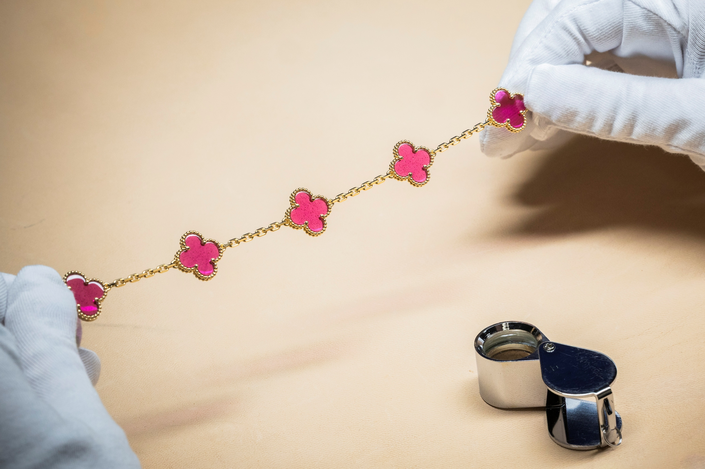

01
Polishing
A thorough polishing enhances the regularity and brilliance of the double-beaded contour. The gold beads catch the light, giving the perimeter definition without interrupting the four-leaf shape.


The Alhambra motif is defined not only by its shape, but also by the precision of its making. From polishing and setting to the finishing of the clasp and chain, each detail contributes to the refinement of the final piece.
Every part of the Alhambra motif receives attention, including those details that are almost invisible when the jewel is worn. What appears effortless is the result of precise decisions, repeated by hand.
A thorough polishing enhances the regularity and brilliance of the double-beaded contour. The gold beads catch the light, giving the perimeter definition without interrupting the four-leaf shape.

During setting, the central stone or decorative material is fitted precisely into its gold mount. The meeting point between surface and frame must feel seamless, so the material becomes part of the motif rather than a separate element.

Craftsmanship continues on the reverse. The claws at the back are rounded to create a smooth touch against skin and clothing. Although they are usually unseen, these details change how the jewel feels in everyday use.

The clasp is decorated with the Maison’s monogram, completing the piece with a refined touch. This small finishing detail gives the closure its own signature.

The chain is faceted to accentuate its luster. It contributes movement and continuity, joining the finished motifs into one composed whole.
Every detail
is refined by hand.
The final object carries the memory of each stage: polished gold, a carefully fitted center, a smooth reverse, and the refined movement of the chain. Together, they make the Alhambra motif both recognizable and wearable.